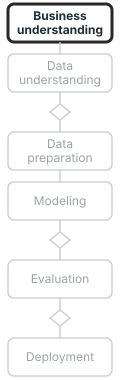

name: title layout: true class: cover --- count: false .section-mark.center[ ## Reading a time series ### Trend, season, and the change from one day to the next <br /> Oscar Esteban <<code>oscar.esteban@hevs.ch</code>> <br /> EAD · Exploration avancée de données et intelligence décisionnelle · 23.10.2026 <div style="font-size: 0.8em; margin-top: 1.2em;"><a href="https://oesteban.github.io/msba-ead-2026-2027-slides/day2/07-series/index.html"> https://oesteban.github.io/msba-ead-2026-2027-slides/day2/07-series/index.html </a></div> ] ??? **This deck reads a series before anyone forecasts it: its trend, its season, and how much each value resembles the one before.** The concepts are taught on open data, mostly two years of bike rentals and a heartbeat; the hands-on then reads one year of the Dow Jones in Dataiku. Forecasting itself, and how a forecast is judged, follow after the break (slide 27). --- name: newsection layout: true .perma-sidebar[ <p class="rotate"> <a rel="license" href="http://creativecommons.org/licenses/by/4.0/"><img alt="Creative Commons License" style="border-width:0; height: 20px; padding-top: 6px;" src="https://i.creativecommons.org/l/by/4.0/88x31.png" /></a> <span style="padding-left: 10px; font-weight: 600;">Reading a time series (23.10.2026)</span> </p> ] --- class: vcenter # Outline .cards.steps[ .card[ .enum[1] <span class="part">Time series.</span> What firms record in time; one quantity at regular steps; why the order is the data; the decision that fixes the horizon. Slides 2 to 5. ] .card[ .enum[2] <span class="part">Trend and season.</span> Trend and cycle, seasonality, additive or multiplicative swings, decomposition, on two years of bike rentals. Slides 6 to 9. ] .card[ .enum[3] <span class="part">Autocorrelation.</span> A series against itself a step earlier; a heartbeat; reading an autocorrelation; stationarity and differencing. Slides 10 to 14. ] .card[ .enum[4] <span class="part">Hands-on 6: the Dow Jones.</span> A treasury team's question, the index, Dataiku and the Flow; the level and its change, the weekday check, why prices behave so, the last value; forecasting next. Slides 15 to 27. ] ] ??? **Four parts: what a time series is, its trend and season, its autocorrelation, then a hands-on on the Dow Jones.** Parts 1 to 3 hold for any series and are shown on open data, mostly the daily rentals of Capital Bikeshare in Washington DC in 2011 and 2012. Part 4 turns to one case: a treasury team asks whether the index's past days tell its next one, and groups check it in Dataiku. --- class: vcenter # Series in a firm .fullw[ <div class="trio"> <div><b class="k">Demand</b>Units sold per day, calls per hour, electricity per half-hour.</div> <div><b class="k">Prices</b>A share, an index, an exchange rate, at each trading day's close.</div> <div class="lit"><b class="k">Sensors</b>A machine's temperature, a patient's heart, many times a second.</div> </div> .lead.big.center[Firms record many quantities in time; forecasts of them set stock, staff and budgets.] ] .footnote[R. J. Hyndman and G. Athanasopoulos (2021), section 1.1.] ??? **Firms record many quantities in time, and forecasts of them set stock, staff and budgets.** A call centre rosters next week's staff on forecast call volumes, an inventory is stocked on forecast requirements, a power plant is built on forecast demand: "forecasting is an important aid to effective and efficient planning" (Hyndman & Athanasopoulos, 2021, section 1.1, verbatim). Slide 3 shows four, three of them from sensors. --- class: stepwise-svg, vcenter # A time series .fullw[ <div class="step-1"><object type="image/svg+xml" data="images/examples.svg" style="width: 100%; max-height: 410px; display: block; margin: 0 auto; pointer-events: none;" aria-label="Four series: daily bike rentals over two years, four seconds of an ECG, two seconds of an EEG, and one fMRI voxel over seven and a half minutes"></object></div> .step-5.lead.big.center[One quantity at regular steps, in order.] ] .footnote[Bike rentals: H. Fanaee-T (2013), UCI, .lic[CC BY 4.0]. ECG: G. B. Moody and R. G. Mark (2001); EEG: G. Schalk et al. (2004); PhysioNet, .lic[ODC-By 1.0]. fMRI: K. J. Gorgolewski et al. (2013), OpenNeuro ds000114, .lic[CC0].] ??? **A time series is one quantity observed at regular steps, in order: a day, a 360th or a 160th of a second, two and a half seconds.** "Anything that is observed sequentially over time is a time series" (Hyndman & Athanasopoulos, 2021, section 1.4, verbatim); the book keeps to regular steps (section 1.4). Here: bike rentals, one a day for 731 days; an ECG at 360 values a second (Moody & Mark, 2001); an EEG at 160 (Schalk et al., 2004); one fMRI voxel every 2.5 seconds (Gorgolewski et al., 2013). Slide 4 shows what the order holds. --- class: stepwise-svg, vcenter # Order is the data .fullw[ <div class="step-1"><object type="image/svg+xml" data="images/shuffle.svg" style="width: 100%; max-height: 400px; display: block; margin: 0 auto; pointer-events: none;" aria-label="The daily bike rentals in order, rising over two years, then the same 731 values shuffled, a flat band of noise"></object></div> .step-3.lead.big.center[Shuffle the rows and the series is gone: day 1's shuffled folds do not apply as they stand.] ] .footnote[*Model selection and cross-validation*: K-fold. C. Bergmeir et al. (2018). Data: H. Fanaee-T (2013), UCI, .lic[CC BY 4.0].] ??? **Shuffle the rows of a series and the series is gone: the shuffled folds of day 1 do not apply as they stand.** Shuffled, the 731 daily rentals lose their rise from 2011 to 2012. K-fold (*Model selection and cross-validation*, slide 5) tests rows drawn at random; in a series their errors correlate with those of their neighbours left in training, which invalidates it, except for purely autoregressive models with uncorrelated errors (Bergmeir et al., 2018). Slide 27 names the alternative: test on the days after. --- class: vcenter # A forecast serves a decision .fullw[ <div class="trio"> <div><b class="k">Hours to days</b>Staff for next week, bikes to move tonight, production to schedule.</div> <div><b class="k">Months</b>Raw materials to buy, people to hire, machines to order.</div> <div><b class="k">Years</b>Sites, capacity, strategy: the long-term plan.</div> </div> .lead.big.center[The decision fixes the horizon: how far ahead the forecast must see.] ] .footnote[R. J. Hyndman and G. Athanasopoulos (2021), section 1.2. *From a business question to a first model*: the machine-learning canvas, L. Dorard (2015).] ??? **The decision fixes the horizon: a roster needs days ahead, a purchase months, a site years.** Short-term forecasts are "needed for the scheduling of personnel, production and transportation" (Hyndman & Athanasopoulos, 2021, section 1.2, verbatim); medium-term ones serve buying raw materials, hiring and machinery, long-term ones strategic planning, and each horizon calls for its own models (sections 1.2 and 1.3). The machine-learning canvas of *From a business question to a first model* asks for the horizon in its prediction-task box: the wait before the outcome is observed (Dorard, 2015). --- class: stepwise-svg, vcenter # Trend and cycle .fullw[ <div class="step-1"><object type="image/svg+xml" data="images/trend.svg" style="width: 100%; max-height: 400px; display: block; margin: 0 auto; pointer-events: none;" aria-label="Daily bike rentals in 2011 and 2012, their smooth trend-cycle rising and falling with each year, and each year's mean: 3,406 a day in 2011, 5,600 in 2012"></object></div> .step-4.lead.big.center[A trend is the long-run direction, not necessarily a line; a cycle rises and falls without a fixed period.] ] .footnote[R. J. Hyndman and G. Athanasopoulos (2021), section 2.3. Data: H. Fanaee-T (2013), Capital Bikeshare, UCI dataset 275, .lic[CC BY 4.0].] ??? **A trend is the long-run direction, not necessarily a straight line; a cycle rises and falls without a fixed period.** A cycle usually follows the economy and lasts two years or more (Hyndman & Athanasopoulos, 2021, section 2.3); decomposition keeps trend and cycle together as one trend-cycle (chapter 3). The rentals rise from 3,406 a day in 2011 to 5,600 in 2012. Their trend-cycle, an STL fit smoothed over 91 days (slide 9), also swings within each year: two years cannot separate a yearly season from it. --- class: stepwise-svg, vcenter # Seasonality .fullw[ <div class="step-1"><object type="image/svg+xml" data="images/season.svg" style="width: 100%; display: block; margin: 0 auto; pointer-events: none;" aria-label="Monthly means of all rentals, low in January and high from May to September; weekday means of registered riders, high on weekdays, and of casual riders, high at weekends"></object></div> .step-3.lead.big.center[A season repeats with a fixed period set by the calendar: the year, the week.] ] .footnote[R. J. Hyndman and G. Athanasopoulos (2021), section 2.3. Data: H. Fanaee-T (2013), UCI, .lic[CC BY 4.0].] ??? **A season repeats with a fixed, known period set by the calendar: here the year, and the week.** "Seasonality is always of a fixed and known period" (Hyndman & Athanasopoulos, 2021, section 2.3, verbatim). Rentals average 2,176 a day in January, 5,350 to 5,772 from May to September. Registered riders ride most from Monday to Friday, casual riders at weekends (1,465 on Saturdays, 551 on Wednesdays): the two weekly seasons largely cancel in the total, whose weekday means stay between 4,229 and 4,690. A total can hide both. --- class: stepwise-svg, vcenter # Additive or multiplicative .fullw[ <div class="step-1"><object type="image/svg+xml" data="images/additive.svg" style="width: 100%; display: block; margin: 0 auto; pointer-events: none;" aria-label="Two drawn sketches, swings of the same size and swings that grow with the level; then casual riders' weekday and weekend means by month, the gap growing with the level"></object></div> .step-4.lead.big.center[Additive swings keep their size; multiplicative swings grow with the level.] ] .footnote[R. J. Hyndman and G. Athanasopoulos (2021), section 3.2. Data: H. Fanaee-T (2013), UCI, .lic[CC BY 4.0].] ??? **An additive season keeps the size of its swings; a multiplicative one grows with the level, as casual riders' weekends do.** The two sketches are drawn, not data. Swings proportional to the level call for a multiplicative decomposition, "common with economic time series" (Hyndman & Athanasopoulos, 2021, section 3.2, verbatim). Casual riders' weekend mean stays 1.6 to 3.0 times their weekday mean every month, while the gap grows from 84 a day in January 2011 to 1,729 in May 2012: the ratio holds, the size does not. --- class: stepwise-svg, vcenter # Decomposition .fullw[ <div class="step-1"><object type="image/svg+xml" data="images/stl.svg" style="width: 100%; max-height: 400px; display: block; margin: 0 auto; pointer-events: none;" aria-label="Casual riders' daily rentals split by STL into a trend-cycle, a weekly season and a remainder; 29 October 2012, the lowest day of the two years, is circled in the remainder"></object></div> .step-5.lead.big.center[STL splits trend-cycle, season and remainder; a robust fit leaves unusual days in the remainder.] ] .footnote[R. B. Cleveland et al. (1990); R. J. Hyndman and G. Athanasopoulos (2021), section 3.6. Data: H. Fanaee-T (2013), UCI, .lic[CC BY 4.0].] ??? **STL splits a series into a trend-cycle, a season and a remainder, and its robust fit leaves unusual days in the remainder.** STL, Seasonal and Trend decomposition using Loess (Cleveland et al., 1990), takes any period, here 7 days for casual riders, and lets the season change size over time; a multiplicative split takes logs first (Hyndman & Athanasopoulos, 2021, section 3.6). Robust, it keeps unusual days out of the trend-cycle and season: "They will, however, affect the remainder component" (Hyndman & Athanasopoulos, 2021, section 3.6, verbatim). 29 October 2012, the lowest day of the two years (22 rentals), sits in the remainder; Fanaee-T and Gama (2013, Table 4) tie it to Hurricane Sandy. --- class: stepwise-svg, vcenter # Autocorrelation .fullw[ <div class="step-1"><object type="image/svg+xml" data="images/lag.svg" style="width: 100%; display: block; margin: 0 auto; pointer-events: none;" aria-label="A table of days with their rentals and the day before's, then 730 days plotted against the day before: correlation 0.85"></object></div> .step-4.lead.big.center[Autocorrelation: how much a series resembles itself k steps earlier.] ] .footnote[R. J. Hyndman and G. Athanasopoulos (2021), section 2.8. Data: H. Fanaee-T (2013), UCI, .lic[CC BY 4.0].] ??? **Autocorrelation measures how much a series resembles itself k steps earlier; for the bike rentals and the day before, 0.85.** Each of the 730 pairs sets a day's rentals against the day before's. Autocorrelation "measures the linear relationship between lagged values of a time series" (Hyndman & Athanasopoulos, 2021, section 2.8, verbatim): r1 one step back, r2 two, and all the lags together form the autocorrelation function, or ACF (section 2.8). A forecast built on past values relies on such resemblance (section 1.4). --- class: stepwise-svg, vcenter # A heartbeat .fullw[ <div class="step-1"><object type="image/svg+xml" data="images/ecg-acf.svg" style="width: 100%; max-height: 380px; display: block; margin: 0 auto; pointer-events: none;" aria-label="Ten seconds of an ECG with thirteen beats, then its autocorrelation at lags up to two seconds, its highest peak at 0.81 seconds: 74 beats a minute"></object></div> .step-4.lead.big.center[Its autocorrelation peaks at the interval between beats: the heart rate, from the series alone.] ] .footnote[MIT-BIH Arrhythmia Database, record 100: G. Moody and R. Mark (2005); G. B. Moody and R. G. Mark (2001); T. Pollard et al. (2026). .lic[ODC-By 1.0].] ??? **The ECG's autocorrelation peaks at the interval between two beats, so the heart rate can be read from the series alone.** The ECG is record 100 of the MIT-BIH Arrhythmia Database (Moody & Mark, 2001). Its autocorrelation peaks at a lag of 0.81 s: 74 beats a minute. The record's expert-reviewed beat annotations give a mean interval of 0.806 s over the same 10 seconds. Any pattern that repeats makes the autocorrelation peak at its period, as a weekly season does on slide 12. --- class: stepwise-svg, vcenter # Reading an autocorrelation .fullw[ <div class="step-1"><object type="image/svg+xml" data="images/acf.svg" style="width: 100%; max-height: 400px; display: block; margin: 0 auto; pointer-events: none;" aria-label="The autocorrelation of all rentals, high and slowly decaying over 28 days; that of casual riders, with spikes at 7, 14, 21 and 28 days; a grey band where noise would fall"></object></div> .step-3.lead.big.center[A trend decays slowly, a season spikes at its period; bars inside the band are noise.] ] .footnote[R. J. Hyndman and G. Athanasopoulos (2021), sections 2.8 and 2.9. Data: H. Fanaee-T (2013), UCI, .lic[CC BY 4.0].] ??? **A trend makes the autocorrelation decay slowly, a season makes it spike at its period, and bars inside the band are noise.** All rentals decay from 0.85 at lag 1 to 0.65 at lag 28, as with a trend, since "observations nearby in time are also nearby in value" (Hyndman & Athanasopoulos, 2021, section 2.8, verbatim). Casual riders spike at 7, 14, 21 and 28 days (0.73 at 7): their weekly season. White noise puts about 95% of its bars within ±1.96/√T (section 2.9), here ±0.072 for 731 days. --- class: stepwise-svg, vcenter # Stationarity .fullw[ <div class="step-1"><object type="image/svg+xml" data="images/stationary.svg" style="width: 100%; max-height: 400px; display: block; margin: 0 auto; pointer-events: none;" aria-label="Daily rentals, their 30-day mean drifting up and down; their change from the day before, its 30-day mean flat at zero"></object></div> .step-3.lead.big.center[A stationary series looks the same whenever observed: its mean and spread do not drift.] ] .footnote[R. J. Hyndman and G. Athanasopoulos (2021), section 9.1. Data: H. Fanaee-T (2013), UCI, .lic[CC BY 4.0].] ??? **A stationary series looks the same whenever it is observed: its mean and its spread do not drift with time.** Its "statistical properties do not depend on the time at which the series is observed" (Hyndman & Athanasopoulos, 2021, section 9.1, verbatim); a trend or a season rules it out, white noise has it (section 9.1). The rentals' 30-day mean drifts with the year. Their change from the day before keeps a 30-day mean near zero, though its spread still varies through the year: closer to stationary, not perfectly so. --- class: stepwise-svg, vcenter # Differencing .fullw[ <div class="step-1"><object type="image/svg+xml" data="images/diff.svg" style="width: 100%; max-height: 400px; display: block; margin: 0 auto; pointer-events: none;" aria-label="The autocorrelation of the rentals' change from the day before, near zero past lag 1; that of casual riders' change from a week before, the spikes at 14, 21 and 28 days gone and one negative bar left at 7"></object></div> .step-3.lead.big.center[The change from the day before removes a trend, from a week before a weekly season; two differences almost always suffice.] ] .footnote[R. J. Hyndman and G. Athanasopoulos (2021), section 9.1. Data: H. Fanaee-T (2013), UCI, .lic[CC BY 4.0].] ??? **The change from the day before removes a trend, from a week before a weekly season; two differences almost always suffice.** These are the first difference and the seasonal difference, here at lag 7 (Hyndman & Athanasopoulos, 2021, section 9.1). After them, the rentals' autocorrelation is -0.29 at lag 1 and small beyond; casual riders' weekly spikes are gone, leaving one negative bar at lag 7 (-0.465). In practice, "it is almost never necessary to go beyond second-order differences" (Hyndman & Athanasopoulos, 2021, section 9.1, verbatim). Hands-on 6 reads the Dow Jones's daily change. --- .section-mark[ # Hands-on 6:<br />the Dow Jones ] ??? **Hands-on 6 reads one year of the Dow Jones daily close: its level, its change from one trading day to the next, and its weekdays.** It runs the checks of slides 7 and 10 to 14 (season, autocorrelation, differencing) on a stock index. Slides 16 to 20 set the case, the data and the Flow; slides 21 and 22 give the moves; slides 23 to 26 read the results and explain them. --- class: vcenter # The case <p></p> .beside-thumb[ <div class="duo big"> <div><b class="k">The decision</b>A treasury team buys an index fund once a month, on a day of its choosing.</div> <div class="lit"><b class="k">The question</b>Do the past days' moves tell whether the next trading day will be lower? The horizon: one trading day.</div> </div> .lead.big.center[If the past days tell the next one, the team can pick its day.] ] .footnote[A scenario, not data.] ??? **A treasury team buys an index fund once a month; if the past days told the next one, it could pick a cheaper day.** The case is a scenario, not data, and its horizon is one trading day, the first of slide 5's ranges. Whether a quantity can be forecast depends on how well its drivers are understood, how much data there is, how like the past the future is, and whether forecasts affect it (Hyndman & Athanasopoulos, 2021, section 1.1). --- class: vcenter # The data <img class="phase-thumb" src="images/phase-du.svg" alt="The CRISP-DM phases, data understanding lit" /> .beside-thumb.terms[ <table style="width: 100%;" class="big"> <caption class="data-lead"><b>Prices</b> and <span class="tgt-mark">the <b>series read</b> (<code>Close</code>)</span></caption> <tr><th>Date</th><th>Open</th><th>High</th><th>Low</th><th class="tgt">Close</th><th>Volume</th></tr> <tr class="meaning"><td>a trading day</td><td>first price</td><td>highest</td><td>lowest</td><td class="tgt">last price</td><td>shares traded</td></tr> </table> <div class="legend"> <div><b>A row</b>: one trading day of the Dow Jones Industrial Average.</div> <div><b>A column</b>: a price of the index, in points, or the day's volume.</div> <div><b>The series read</b>: <code>Close</code>, the price at the day's end.</div> </div> <div class="facts"> <div><span class="num">256</span>trading days, 1 October 2024 to 8 October 2025.</div> <div><span class="num">11</span>weekdays absent, besides every weekend: the market's holidays.</div> <div><span class="num">292</span>points: the mean change from one trading day to the next.</div> </div> ] .footnote[Downloaded from stooq (symbol ^DJI) with the previous edition's material; counts on the course file. Its licence is not recorded: no value is shown.] ??? **The data are one year of the Dow Jones, one row per trading day; the series read is the close, the index's price at the day's end.** The 256 rows run from 1 October 2024 to 8 October 2025; weekends and 11 market holidays are absent, so a step is a trading day, as in the textbook's stock examples (Hyndman & Athanasopoulos, 2021, section 5.2). The close moved 292 points a day on average, up or down. The extract's licence is not recorded: no value is shown. --- class: vcenter # Column types <img class="phase-thumb" src="images/phase-du.svg" alt="The CRISP-DM phases, data understanding lit" /> .beside-thumb[ <div class="types three"> <div><b>A date<span class="n">1</span></b><code>Date</code> <p>It orders the rows; read as text until it is parsed as a date.</p></div> <div><b>The series<span class="n">1</span></b><code>Close</code> <p>A number a trading day: its level, and its change from the day before.</p></div> <div><b>Left aside<span class="n">4</span></b><code>Open</code>, <code>High</code>, <code>Low</code>, <code>Volume</code> <p>The same day's other prices and its volume.</p></div> </div> <p class="types-after">No target and no model yet: the hands-on reads the series before anyone forecasts it.</p> ] .footnote[The course file's columns, as downloaded.] ??? **The date orders the rows, the close is the series read, and the other four columns are left aside.** Dataiku reads `Date` as text until it is parsed as a date (sheet *Hands-on 6*, step 1); only then can a recipe order the rows by it. The close is read as its level and as its change from the day before, slide 14's first difference (Hyndman & Athanasopoulos, 2021, section 9.1). No column is a target: the series is read before anyone forecasts it. --- class: stepwise-svg, vcenter # In Dataiku <img class="phase-thumb" src="images/phase-du.svg" alt="The CRISP-DM phases, data understanding lit" /> .beside-thumb[ <div class="step-1"><object type="image/svg+xml" data="images/dss-window.svg" style="width: 100%; display: block; margin: 0 auto; pointer-events: none;" aria-label="A drawing of Dataiku's Window recipe: rows ordered by Date, ascending; on Close, a Lag with offsets 1 and 2"></object></div> .step-4.lead.big.center[The Window recipe puts each day's close beside the closes one and two trading days before.] ] .footnote[Drawn after Dataiku DSS's Window recipe, not a capture; labels to check on the course server.] ??? **Dataiku's Window recipe, ordered by date, puts each day's close beside the closes one and two trading days before.** These are the pairs from which slide 10 computed an autocorrelation (Hyndman & Athanasopoulos, 2021, section 2.8). Lag 1 gives the change, the close minus the close before; lags 1 and 2 give the change before, so the two changes can be correlated. The panel is drawn after the recipe, not captured: the labels and column names on the course server take precedence. --- class: stepwise-svg, vcenter # The Flow <img class="phase-thumb" src="images/phase-du.svg" alt="The CRISP-DM phases, data understanding lit" /> .beside-thumb[ <div class="step-1"><object type="image/svg+xml" data="images/flow.svg" style="width: 100%; display: block; margin: 0 auto; pointer-events: none;" aria-label="The Flow: the Dow Jones through Prepare, Window, Prepare and Group, by weekday; the bike rentals through Prepare and two Group recipes, by weekday and by month"></object></div> ] .footnote[Drawn after a Dataiku DSS Flow; the sheet *Hands-on 6*, steps 1 to 3 and panel 4. Recipe colours schematic.] ??? **The Flow dates the index, lags its close, computes the change and averages it by weekday; in the tail, the bike rentals are averaged by weekday and by month.** On the Dow Jones, Prepare parses `Date`, Window adds the lags, a second Prepare computes the change and the weekday, and Group gives each weekday's mean and spread (sheet *Hands-on 6*, steps 1 to 3). Panel 4 does the same for the bike rentals, whose season slide 7 showed. Recipe colours are schematic. --- class: vcenter # Hands-on 6: does the past tell the next day? <img class="phase-thumb" src="images/phase-du.svg" alt="The CRISP-DM phases, data understanding lit" style="top: 170px;" /> .beside-thumb[ .need[**The need.** A treasury team wants to know whether the Dow Jones's past days tell its next one, before it picks a day to buy. The file: `dowjones102425.csv`.] <div class="moves"> <div><b>1. Chart</b>Upload, parse the date, chart the close.<br /><code>+ Dataset → Upload</code>, <code>Charts</code>; step 1</div> <div><b>2. Lag</b>The closes one and two days before; the change.<br /><code>+ Recipe → Window</code>, <code>Prepare</code>; step 2</div> <div><b>3. Correlate</b>The close with the day before; the change with the change before.<br /><code>Statistics</code>; step 2</div> <div><b>4. Weekdays</b>The change's mean and spread, by weekday.<br /><code>+ Recipe → Group</code>; step 3</div> </div> .admonition.question.near[ <i class="fa-solid fa-circle-question"></i> **Does today's change say anything about tomorrow's?** ] .time[Sheet *Hands-on 6*, steps 1 to 3. Groups of three. 22 minutes.] ] .footnote[Steps as on the sheet.] ??? **In the 22 minutes of the core, groups chart the close, put each day beside the two before, correlate, and average the change by weekday.** Step 1 uploads `dowjones102425.csv`, parses `Date` and charts the close. Step 2 adds the lags and the changes, then reads in **Statistics** the correlation of the close with the close before, and of the change with the change before, as slide 10 did for the rentals. Step 3 gives the change's mean and standard deviation by weekday. --- class: vcenter # Hands-on 6, continued <img class="phase-thumb" src="images/phase-du.svg" alt="The CRISP-DM phases, data understanding lit" /> .beside-thumb[ <div class="moves"> <div><b>5. Upload</b>The bike rentals, 731 days.<br /><code>+ Dataset → Upload</code>; panel 4</div> <div><b>6. Weekdays</b>Rentals' mean and spread by weekday.<br /><code>Prepare</code>, <code>+ Recipe → Group</code>; panel 4</div> <div><b>7. Months</b>The same by month.<br /><code>+ Recipe → Group</code>; panel 4</div> <div><b>8. Decide</b>What the treasury team is told.<br />Panel 5</div> </div> .admonition.question.near[ <i class="fa-solid fa-circle-question"></i> **Where does a season stand out of its spread: in the index, or in the bikes?** ] .time[Sheet panels 4 and 5. 8 minutes.] ] .footnote[Data: H. Fanaee-T (2013), Capital Bikeshare, UCI dataset 275, .lic[CC BY 4.0].] ??? **In 8 more minutes, in panels 4 and 5, groups run the same check on the bike rentals, by weekday and by month, then write what the treasury team is told.** The same means and spreads, on a series that has seasons (slide 7), show what a season looks like when one exists. Panel 4 groups the 731 days by day of week, then by month; panel 5 asks what the past days tell the treasury team, and where a season stood out of its spread. Slide 24 reads both. --- class: stepwise-svg, vcenter # Level and change <img class="phase-thumb" src="images/phase-du.svg" alt="The CRISP-DM phases, data understanding lit" /> .beside-thumb[ <div class="step-1"><object type="image/svg+xml" data="images/dj-acf.svg" style="width: 100%; max-height: 400px; display: block; margin: 0 auto; pointer-events: none;" aria-label="The autocorrelation of the close, 0.96 at lag 1 and slowly decaying; that of the change, -0.02 at lag 1 and inside the noise band except at lag 4"></object></div> .step-3.lead.big.center[The level is almost yesterday's; the change says almost nothing about the next one.] ] .footnote[Computed on the course file; statistics only. R. J. Hyndman and G. Athanasopoulos (2021), section 2.9.] ??? **The close is almost yesterday's close, autocorrelation 0.96, while its change says almost nothing about the next change, -0.02.** The close's autocorrelation decays slowly, as a trend's does (slide 12). For white noise, about 95% of the bars fall within ±1.96/√T, here ±0.12 (Hyndman & Athanasopoulos, 2021, section 2.9); of the change's ten, only lag 4, -0.15, falls just outside, about as often as noise alone would. Dataiku's **Statistics** shows 0.97 and -0.02: a Pearson correlation centres each column on its own mean, the autocorrelation on the whole series' (section 2.8). --- class: stepwise-svg, vcenter # The weekday check <img class="phase-thumb" src="images/phase-du.svg" alt="The CRISP-DM phases, data understanding lit" /> .beside-thumb[ <div class="step-1"><object type="image/svg+xml" data="images/weekday.svg" style="width: 100%; max-height: 400px; display: block; margin: 0 auto; pointer-events: none;" aria-label="The mean change by weekday, from -56 points on Thursdays to +110 on Wednesdays, each with whiskers of 317 to 557 points"></object></div> .step-3.lead.big.center[No weekday stands out of the spread: no weekly season, and one year cannot show a yearly one.] ] .footnote[Computed on the course file; statistics only.] ??? **No weekday's mean change stands out of its spread, so the index shows no weekly season, and one year cannot show a yearly one.** The mean change runs from -56 points on Thursdays to +110 on Wednesdays, against standard deviations of 317 to 557 points. "Seasonality is always of a fixed and known period" (Hyndman & Athanasopoulos, 2021, section 2.3, verbatim). The bike rentals' monthly means, 2,176 in January to 5,772 in June, do stand out of spreads of 1,145 to 1,988: a season. The treasury team has no weekday to prefer. --- class: vcenter # Why prices behave so .fullw[ <div class="duo big"> <div><b class="k">Efficient markets</b>When prices reflect all that is known, trading rules built on past prices earn nothing extra.</div> <div class="lit"><b class="k">The evidence</b>For the 30 Dow Jones stocks, the changes from one day to the next were close to uncorrelated; filter rules lost to trading costs.</div> </div> .lead.big.center[What past prices could tell is already in today's price.] ] .footnote[E. F. Fama (1970), sections II and III.] ??? **In an efficient market, what past prices could tell about the next price is already in today's price.** If prices fully reflect what past prices show, trading rules built on them earn no more than equilibrium returns; weak-form tests check this (Fama, 1970, pp. 383 to 385). For the 30 Dow Jones stocks, about 1957 to 1962 (p. 393), "the measured serial correlations are always close to zero" (Fama, 1970, p. 394, verbatim), and small filter rules lost their edge over buy-and-hold to minimum trading costs (pp. 395 to 396). --- class: stepwise-svg, vcenter # The last value .fullw[ <div class="step-1"><object type="image/svg+xml" data="images/naive.svg" style="width: 100%; max-height: 400px; display: block; margin: 0 auto; pointer-events: none;" aria-label="A simulated random walk, and its forecast for every day ahead: a flat line at today's value"></object></div> .step-3.lead.big.center[A random walk's best forecast is its last value: the naive forecast, the benchmark every model must beat.] ] .footnote[R. J. Hyndman and G. Athanasopoulos (2021), section 5.2. The walk is simulated.] ??? **A random walk's best forecast is its last value: the naive forecast, the benchmark every model must beat.** A random walk's next move is as likely up as down, so its forecast is its last observation (Hyndman & Athanasopoulos, 2021, section 9.1). The naive method "works remarkably well for many economic and financial time series" (Hyndman & Athanasopoulos, 2021, section 5.2, verbatim). If the index is a random walk, the treasury team's best forecast of tomorrow's close is today's. The walk drawn is simulated. --- class: vcenter # Forecasting .fullw[ <div class="duo big"> <div><b class="k">Simple forecasts first</b>The last value, the same day a week before, the mean: every model is set beside them.</div> <div><b class="k">Judged on the future</b>Trained on the past, tested on the days after, from several starting points.</div> </div> .lead.big.center[After the break: forecasting, and judging a forecast.] ] .footnote[R. J. Hyndman and G. Athanasopoulos (2021), sections 5.2 and 5.10.] ??? **After the break: forecasting, the simple forecasts first, every forecast judged on days it has not seen.** The next deck, at 15:00, sets every model beside the last value, the same day a week before and the mean, three of the textbook's four benchmarks (Hyndman & Athanasopoulos, 2021, section 5.2). In time series cross-validation each test set follows its training set, so "no future observations can be used in constructing the forecast" (Hyndman & Athanasopoulos, 2021, section 5.10, verbatim), and the origin rolls forward: the order slide 4's shuffled folds broke. --- # References .refs.cols2[ - Bergmeir, C., Hyndman, R. J. and Koo, B. (2018). A note on the validity of cross-validation for evaluating autoregressive time series prediction. *Computational Statistics & Data Analysis* 120, 70 to 83. - Cleveland, R. B., Cleveland, W. S., McRae, J. E. and Terpenning, I. (1990). STL: a seasonal-trend decomposition procedure based on loess. *Journal of Official Statistics* 6(1):3 to 73. - Fama, E. F. (1970). Efficient capital markets: a review of theory and empirical work. *The Journal of Finance* 25(2):383 to 417. - Fanaee-T, H. (2013). Bike Sharing [dataset]. UCI Machine Learning Repository, doi:10.24432/C5W894. - Fanaee-T, H. and Gama, J. (2013). Event labeling combining ensemble detectors and background knowledge. *Progress in Artificial Intelligence* 2(2):113 to 127. - Dorard, L. (2015). *The Machine Learning Canvas*, v1.1. ownml.co, CC BY-SA 4.0. - Gorgolewski, K. J., Storkey, A., Bastin, M. E., Whittle, I. R., Wardlaw, J. M. and Pernet, C. R. (2013). A test-retest fMRI dataset for motor, language and spatial attention functions. *GigaScience* 2:6. - Hyndman, R. J. and Athanasopoulos, G. (2021). *Forecasting: Principles and Practice*, 3rd ed. OTexts, Melbourne. - Moody, G. and Mark, R. (2005). MIT-BIH Arrhythmia Database, version 1.0.0. PhysioNet, doi:10.13026/C2F305. - Moody, G. B. and Mark, R. G. (2001). The impact of the MIT-BIH Arrhythmia Database. *IEEE Engineering in Medicine and Biology Magazine* 20(3):45 to 50. - Pollard, T. et al. (2026). PhysioNet as a global platform for biomedical research. *Nature Health* 1(8):792 to 795. - Schalk, G. (2009). EEG Motor Movement/Imagery Dataset, version 1.0.0. PhysioNet, doi:10.13026/C28G6P. - Schalk, G., McFarland, D. J., Hinterberger, T., Birbaumer, N. and Wolpaw, J. R. (2004). BCI2000: a general-purpose brain-computer interface system. *IEEE Transactions on Biomedical Engineering* 51(6):1034 to 1043. ] ??? **These are the works the deck's footnotes cite; Hyndman and Athanasopoulos (2021) is the place to start.** Their online textbook, worked in R, holds this deck's topics: patterns, autocorrelation and white noise in chapter 2, decomposition and STL in chapter 3, the simple benchmarks and time series cross-validation in chapter 5, stationarity and differencing in chapter 9. Fama (1970) reviews market efficiency, Cleveland et al. (1990) define STL, Bergmeir et al. (2018) show when k-fold stays valid for a series; the others are the data's sources. --- .section-mark[ # End .large[ Next: 23.10.2026 @ 15h00 (in <span class="timer" data-until="2026-10-23T15:00:00+02:00"></span>) [<i class="fa-solid fa-circle-left"></i>](../06-text/index.html) [<i class="fa-solid fa-home"></i>](#1) [<i class="fa-solid fa-circle-right"></i>](../08-forecast/index.html) ] ] ???